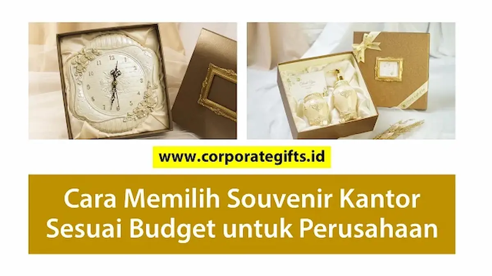

Corporate Gifts ID merangkum bahwa cara memilih souvenir kantor sesuai budget perusahaan adalah dengan mengalkulasi volume penerima, membedah profil demografi audiens, menetapkan tujuan branding, lalu mengelompokkan kisaran harga per unit mulai dari tier ekonomis (Rp20.000 - Rp50.000), menengah (Rp50.000 - Rp150.000), hingga premium VIP (Rp150.000 - Rp500.000+). Melalui penerapan metode tiered gifting, divisi procurement dan marketing dapat menjaga citra profesional institusi tetap prestisius tanpa menyebabkan pembengkakan anggaran operasional.
Souvenir kantor modern kini bukan lagi sekadar pelengkap formalitas seremoni, melainkan instrumen investasi strategis dalam membangun loyalitas mitra dan kepuasan tim kerja. Memilih souvenir yang fungsional, berkualitas prima, dan selaras dengan batas anggaran memerlukan formula kurasi yang tepat.
Mengapa Perencanaan Budget Souvenir Penting?
Souvenir kantor berfungsi sebagai perpanjangan identitas merek (brand ambassador) di meja kerja klien. Tanpa kalkulasi rancangan anggaran biaya (RAB) yang terstruktur sejak awal, pengadaan cinderamata kerap terjebak pada dua jebakan klasik:
- Biaya Membengkak: Memilih spesifikasi barang yang terlalu tinggi tanpa memperhitungkan total kuantitas distribusi sehingga membebani pos keuangan promosi.
- Kesan Murahan (Cheap Perception): Mengorbankan standar material demi menekan harga serendah mungkin, yang berisiko merusak reputasi kredibilitas perusahaan di hadapan stakeholder.
Perencanaan budget yang cermat menjamin setiap rupiah yang dialokasikan menghasilkan dampak retensi relasi dan eksposur merek yang optimal.
Faktor yang Perlu Dipertimbangkan Saat Menyusun Budget Souvenir
Sebelum memilih produk di katalog, pastikan tim pengadaan telah memetakan empat pilar evaluasi berikut:
1. Jumlah Penerima dan Skala Agenda
Total kuantitas barang menentukan skala ekonomi (economies of scale). Pada agenda berskala masal seperti pameran atau seminar publik, prioritaskan produk fungsional dengan biaya per unit ekonomis seperti souvenir promosi kantor. Sementara untuk jamuan direksi atau RUPS tertutup, alokasikan unit berstandar luxury.
2. Profil dan Kebutuhan Audiens
Pahami preferensi harian penerima hadiah. Klien korporat B2B level C-level lebih mengapresiasi gift set eksklusif beraksen kulit dan kemasan hardbox mewah, sedangkan karyawan operasional atau peserta workshop lebih menghargai gadget penunjang mobilitas seperti power bank atau tumbler termos.

Kombinasi paket gift set kantor mulai dari notebook kulit, pulpen metal, hingga smart tumbler yang dapat disesuaikan dengan alokasi budget korporat.
3. Tujuan Pemberian Souvenir
Tujuan strategis menentukan orientasi desain dan finishing produk:
- Penguatan Brand Awareness: Pilih item yang memiliki area cetak logo luas dan sering digunakan di ruang publik (misalnya payung lipat atau totebag kanvas).
- Apresiasi Loyalitas Kemitraan: Pilih item personal bernilai tinggi dengan grafir laser inisial penerima (seperti souvenir custom VIP).
4. Fleksibilitas Harga per Kategori
Tetapkan batas minimum dan maksimum pengeluaran per kategori unit agar seleksi vendor berjalan cepat dan terarah:
- Kategori Ekonomis: Rp20.000 – Rp50.000 per unit (volume tinggi > 200 pcs).
- Kategori Menengah: Rp50.000 – Rp150.000 per unit (volume 50 - 200 pcs).
- Kategori Premium VIP: Rp150.000 – Rp500.000+ per unit (volume eksklusif 20 - 50 pcs).
Strategi Memilih Souvenir Kantor Sesuai Budget
Terapkan 4 taktik pengadaan cerdas berikut agar alokasi dana memberikan hasil optimal:
A. Terapkan Konsep Tiered Gifting
Bagi segmentasi penerima hadiah korporat ke dalam tiga tingkatan:
- Tier 1 (VIP & Strategic Partners): Executive gift set berbalut hardbox dengan sentuhan deboss emas.
- Tier 2 (Karyawan, Mitra Kerja, & Tamu Khusus): Perlengkapan kerja fungsional seperti tumbler vacuum SUS304 dan wireless charging pad.
- Tier 3 (Publik Luas & Peserta Massal): Totebag spunbond/kanvas, pulpen stylus, dan lanyard ID card berdesain estetik.
B. Prioritaskan Produk Multifungsi
Produk serbaguna memberikan persepsi nilai (perceived value) yang tinggi tanpa harus menguras anggaran. Contohnya: smart tumbler dengan display temperatur LED, notebook organizer dengan slot power bank terintegrasi, atau pulpen multifungsi dengan pointer laser.
C. Optimalkan Sentuhan Custom Branding
Daya tarik cinderamata sering kali ditentukan oleh detail finishing. Personalisasi grafir nama individu atau emboss logo minimalis dapat mengubah produk standar menjadi hadiah yang terasa sangat eksklusif di mata penerima.
D. Manfaatkan Material Ramah Lingkungan (Eco-Friendly)
Souvenir berkelanjutan dari material daur ulang, serat bambu, atau kanvas katun alami memberikan dampak citra ESG (Environmental, Social, Governance) yang sangat positif bagi reputasi perusahaan dengan harga yang sangat kompetitif.
Tabel Kisaran Souvenir Kantor Sesuai Kategori Budget
| Tier Kategori | Kisaran Harga / Unit | Rekomendasi Produk Populer | Karakteristik Pengadaan |
|---|---|---|---|
| Ekonomis (Tier 3) | Rp20.000 – Rp50.000 | Totebag kanvas, pulpen metal grafir, tumbler sport, pouch travel | Cocok untuk gathering massal, pameran expo, dan roadshow |
| Menengah (Tier 2) | Rp50.000 – Rp150.000 | Tumbler stainless vacuum, powerbank slim, payung golf otomatis | Ideal untuk onboarding kit, seminar eksekutif, dan apresiasi staf |
| Premium VIP (Tier 1) | Rp150.000 – Rp500.000+ | Gift set kulit exclusive, smart digital box, jam meja kristal, speaker TWS | Dikhususkan bagi klien prioritas, dewan komisaris, dan narasumber VIP |
Kesalahan Umum dalam Pemilihan Souvenir Kantor
Hindari 4 jebakan umum yang sering menurunkan efektivitas program gifting perusahaan:
- Terjebak Paradigma Harga Termurah: Membeli produk tanpa uji sampel yang sering kali berujung pada barang cepat rusak dan mencoreng nama baik perusahaan.
- Abaikan Segmentasi Audiens: Membagikan barang seragam tanpa membedakan kebutuhan klien eksekutif dengan peserta seminar umum.
- Kualitas Cetak Logo Rendah: Menggunakan teknik sablon biasa yang luntur dalam hitungan minggu alih-alih cetak UV atau grafir permanen.
- Pemesanan Terlalu Mepet (Rushed Production): Mengakibatkan biaya ekspres meningkat drastis serta meniadakan proses quality control yang ketat.
Tips Tambahan Pengadaan Souvenir Kantor yang Efisien
- Pesan Jauh Hari (Early Bird Order): Pemesanan 3-4 minggu sebelum acara memberikan keleluasaan waktu sampling serta harga bahan baku terbaik.
- Bekerja Sama dengan Vendor B2B Berpengalaman: Pilih mitra vendor seperti CorporateGifts.ID yang menyediakan layanan konsultasi anggaran, garansi kualitas produksi, dan penerbitan faktur pajak resmi.
- Lakukan Sampling Fisik (Quality Check): Selalu minta mockup digital dan sampel pra-produksi sebelum proses massal dimulai untuk memastikan ketepatan warna pantone logo.
FAQ Seputar Souvenir Kantor Sesuai Budget
Kesimpulan
Memilih souvenir kantor sesuai budget adalah seni menyelaraskan kualitas material, volume pengadaan, dan nilai prestise citra merek perusahaan. Melalui strategi tiered gifting yang terencana, perusahaan dapat memberikan apresiasi yang membekas di hati penerima tanpa kekhawatiran melebihi anggaran yang telah ditetapkan.
Fokuslah pada nilai fungsional, personalisasi logo yang berkelas, serta kerja sama dengan vendor terpercaya untuk memastikan setiap cinderamata menjadi duta promosi yang elegan bagi institusi Anda.